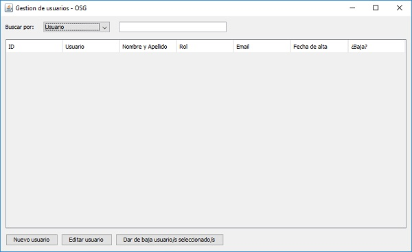
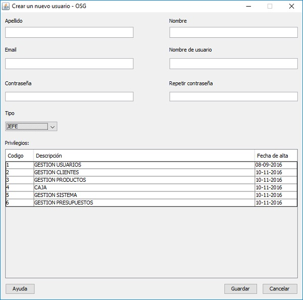
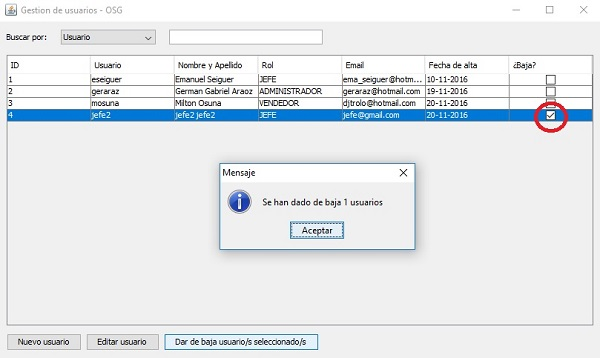

Tal como se nombre en el título este modulo se encarga de la gestión de usuarios que harán uso del sistema.

Puede iniciar a crear un nuevo usuario, presionando el boton "Crear usuario", esta acción lanzará una nueva ventana, donde deberá rellenar los campos

Complete los campo de nombre, apellido, email y nombre de usuario, en cuanto a la contraseña se recomienda una segura como por ejemplo "Osg_2016" (sin comillas), que contenga mayúsculas, minúsculas, número y carateres especiales, recuerde que debe ser de al menos 4 carateres y no superar la docena de carateres de largo. Una vez completados los campos deberá seleccionar el tipo de usuario que podrá ser "Jefe", "Supervisor" y "Empleado", cada uno de estos con mas privilegios que el otro. Para finalizar presione el botón "Guardar".
Nota: en base al tipo de usuario que se elija, se opacarán los accesos en la ventana principal del sistema y estos no serán accesible a menos que se ingrese con una cuenta con mayores, privilegios. Por ejemplo: el usuario tipo "Empleado" solo tendra disponible el boton "Venta" del sistema, para unicamente crear ventas.
Si lo que desea es editar un usuario, deberá seleccionarlo en la tabla y hacer doble clic sobre este o seleccionarlo y presionar el boton "Editar usuario". Este abrirá la ventana similar a "Crear usuario" donde podra editar lo que desee y luego guardar los cambios. Para dar de baja un usuario deberá hacer clic en el cuadrado correspondiente en la columna "¿Baja?", puede seleccionar uno o varios usuarios y luego presionar el boton "Dar de baja usuario/s seleccionado/s". Tras esto se emitira un mensaje informando la operación realizada.
